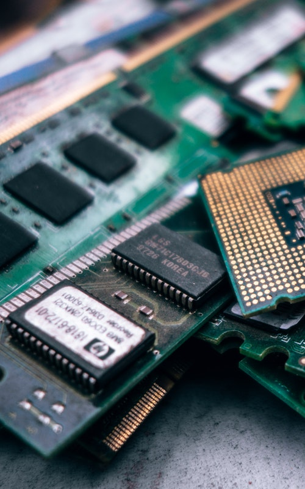

Electricity is the set of physical phenomena associated with the presence and motion
Electricity is at the heart of many modern technologies
Electrical phenomena have been studied since antiquity, though progress in theoretical understanding remained slow until the seventeenth and eighteenth centuries. Even then, practical applications for electricity were few, and it would not be until the late nineteenth century that electrical engineers were able to put it to industrial and residential use. The rapid expansion in electrical technology at this time transformed industry and society, becoming a driving force for the Second Industrial Revolution. Electricity's extraordinary versatility means it can be put to an almost limitless set of applications which include transport, heating, lighting, communications, and computation. Electrical power is now the backbone of modern industrial society
Electrical has two different field
(1) Electric power where electric current is used to energise equipment
Electric power is the rate at which electric energy is transferred by an electric circuit. The SI unit of power is the watt, one joule per second.
Electric power, like mechanical power, is the rate of doing work, measured in watts, and represented by the letter P. The term wattage is used colloquially to mean "electric power in watts." The electric power in watts produced by an electric current I consisting of a charge of Q coulombs every t seconds passing through an electric potential (voltage) difference of V is
{\displaystyle P={\text{work done per unit time}}={\frac {QV}{t}}=IV\,} P = \text{work done per unit time} = \frac {QV}{t} = IV \,
where
Q is electric charge in coulombs
t is time in seconds
I is electric current in amperes
V is electric potential or voltage in volts
Electricity generation is often done with electric generators, but can also be supplied by chemical sources such as electric batteries or by other means from a wide variety of sources of energy. Electric power is generally supplied to businesses and homes by the electric power industry. Electricity is usually sold by the kilowatt hour (3.6 MJ) which is the product of power in kilowatts multiplied by running time in hours. Electric utilities measure power using electricity meters, which keep a running total of the electric energy delivered to a customer. Unlike fossil fuels, electricity is a low entropy form of energy and can be converted into motion or many other forms of energy with high efficiency.
(2)First electric bulb was discoverd by Thomas Edison

light bulbs with a carbon filament were first demonstrated by Joseph Swan in February 1879, and by Edison in October 1879. Carbon filament bulbs, the first electric light bulbs, become available commercially c.1879. In 1904 a tungsten filament was invented by Austro-Hungarians Alexander Just and Franjo Hanaman, and was more efficient and longer-lasting than the carbonized bamboo filament used previously. The introduction of a neutral gas to the glass envelope (or bulb) also helped to improve lifespan and brightness of the bulb.To produce enough light, these lamps required the use of extremely long filaments, and remained so until the development of more efficiently wound tungsten filaments.
(3)Electronics

Electronics comprises the physics, engineering, technology and applications that deal with the emission, flow and control of electrons in vacuum and matter. The identification of the electron in 1897, along with the invention of the vacuum tube, which could amplify and rectify small electrical signals, inaugurated the field of electronics and the electron age.
Electronics deals with electrical circuits that involve active electrical components such as vacuum tubes, transistors, diodes, integrated circuits, optoelectronics, and sensors, associated passive electrical components, and interconnection technologies. Commonly, electronic devices contain circuitry consisting primarily or exclusively of active semiconductors supplemented with passive elements; such a circuit is described as an electronic circuit.
Additional information of Electricity
Contact